Randomization and Sampling
We Have to Flip Coins to Get Independence
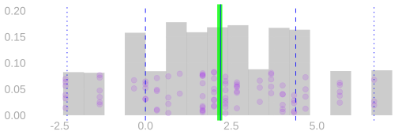

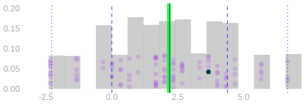
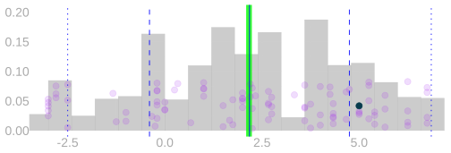
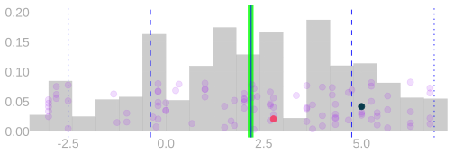
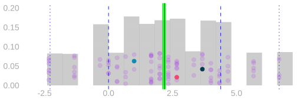
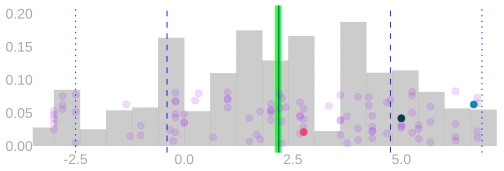
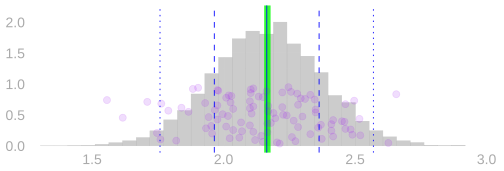
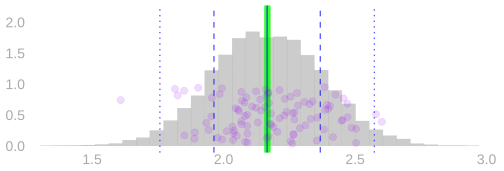
- Each person gets their own coin. Heads, treated. Tails, control.
- Flipping a coin for each person makes treatment assignments independent across people.
- So we don’t choose how many people are treated.
- In the NSW experiment we shuffled. We chose how many to treat, and the shuffle decided who.
- The differences don’t vanish.1
- But they are indistinguishable in large samples. Three assignments, then 600 people
What Population Are We Sampling?
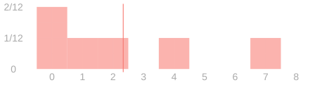
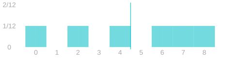
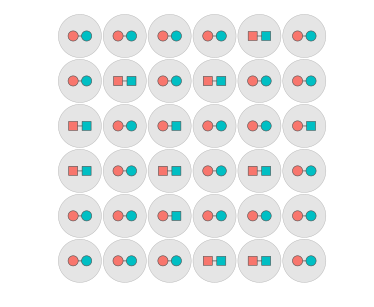


- Q. These are independent pairs with this distribution. How do we get pairs distributed like this? Split the pairs
- A. One way is ordinary sampling.
- Make a population with one entry for each end of each barbell.
- Each person contributes a control entry \p{0,y_j(0)} and a treated entry \p{1,y_j(1)}.
- In the Michigan letter experiment, each household appears twice: once without the letter, once with it.
- Draw one entry with replacement on each call.
- Claim. We get independent pairs with the same distribution as in our experiment.
Why Does This Matter?


Georgia. We sampled voters.
- Can observational study support a causal claim?
- We can think about this by imagining an experiment.
- One that gives us the same distribution of observations.
NSW. We randomized the participants.
- Does our program’s effect on its partipants generalize beyond them?
- We imagine the participants were sampled from a larger population.
- Then we can work in ordinary sampling language.